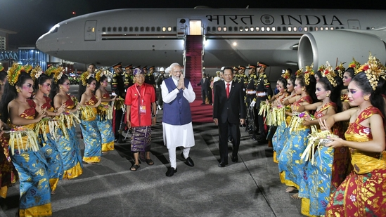

French President Emmanuel Macron will be holding discussion with PM Narendra Modi on vast range of issues---from Ukraine to Indo-Pacific to terrorism to climate change—while intensifying defence ties between two countries

French President Emmanuel Macron his hosting a working lunch for Prime Minister Narendra Modi tomorrow as closest allies deepen bilateral cooperation from seabed to space.
President Droupadi Murmu asked children to dream big and dream for a new and developed India.

President Droupadi Murmu on Monday met students from various schools on the occasion of Children's Day on Monday at the Rashtrapati Bhavan Cultural Centre (RBCC).(ANI)
This is a new era of technological and information revolution. Children are now aware of various domestic, social and environmental issues. With the advent of technology, knowledge and information are now at their fingertips," she added.(ANI)
https://www.hindustantimes.com/photos/news/pm-modi-meets-biden-macron-on-day-1-of-g20-summit-in-bali-in-pics-101668488465097.html
The Prime Minister received a traditional welcome upon his arrival and wrote, "Grateful to the Indian community for the warm welcome in Bali!"(PMO)
Prime Minister Narendra Modi meets US President Joe Biden. Both the leaders shared a warm hug as the G20 Summit began in Bali.(PMO)